规定初始像素覆盖已通过独立数据验收，完整12步与物理安全未通过。Prescribed initial pixel coverage passes the independent DATA audit; full12-step and physical acceptance remain incomplete. Original1280×720; no edits/crop. Every image below is INITIAL, not micro1/final.
{"seed": 2, "proposal_id": 2054, "global_id": 24582, "family": 2}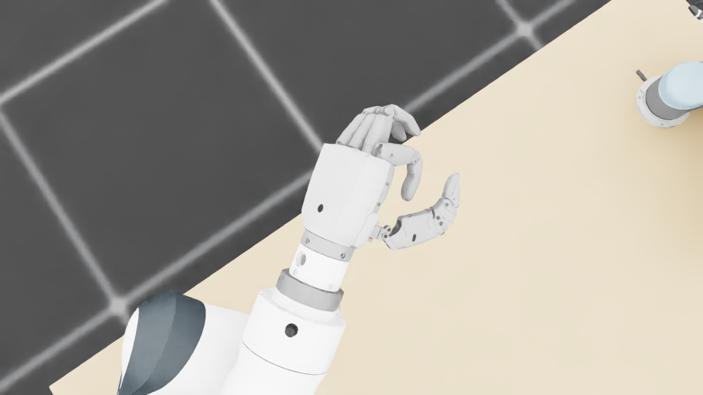
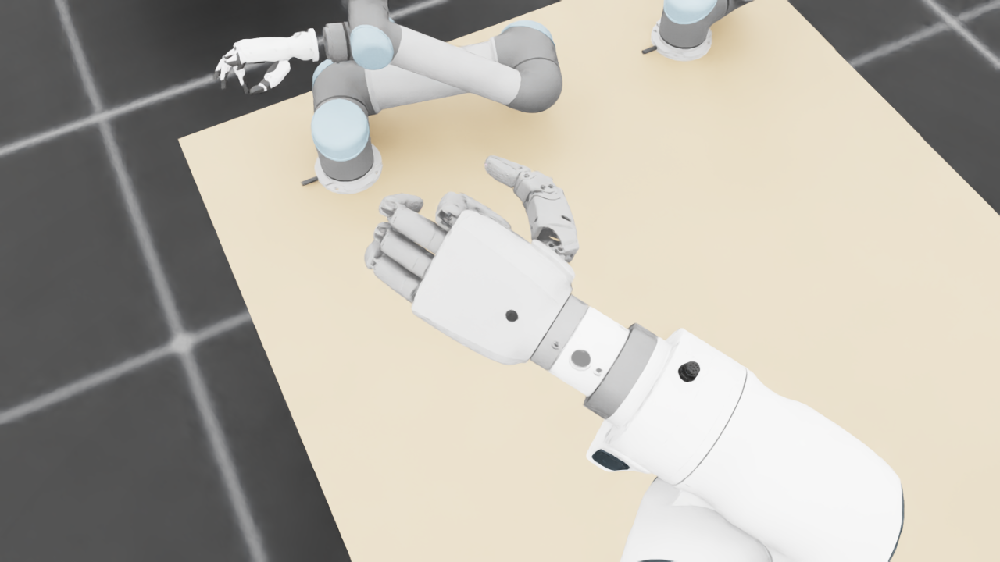
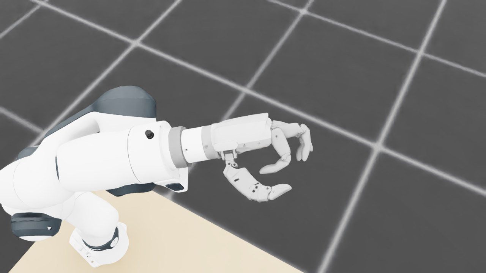
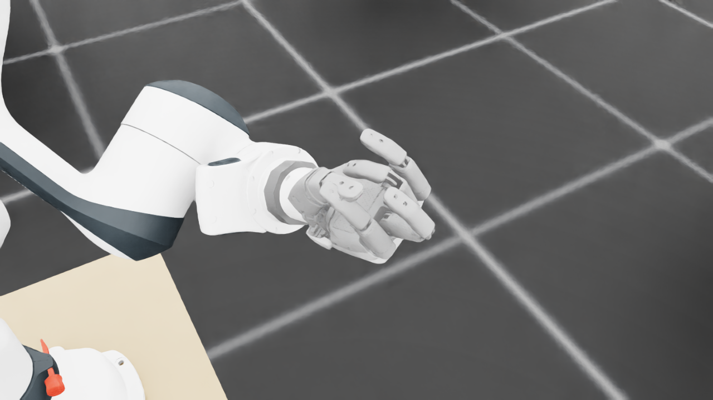
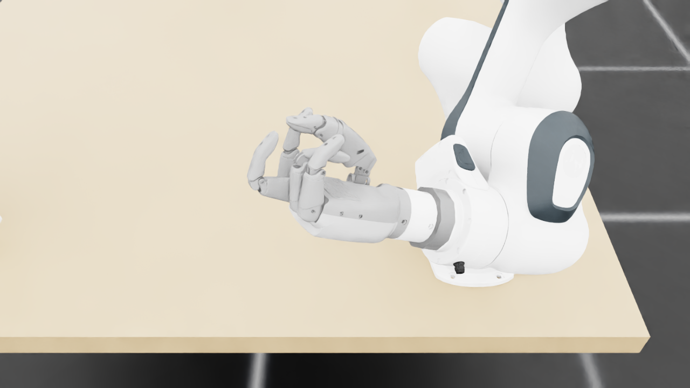
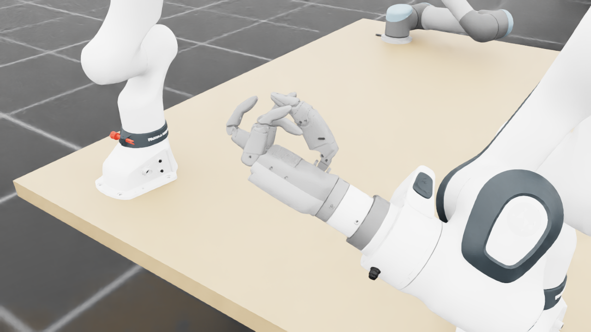
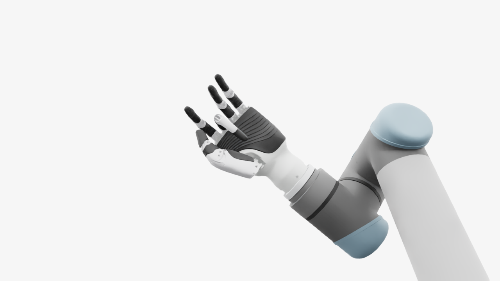
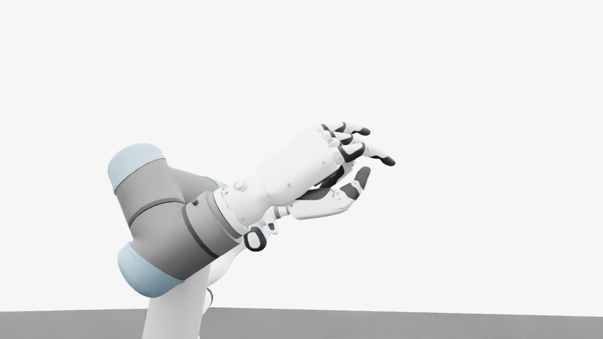
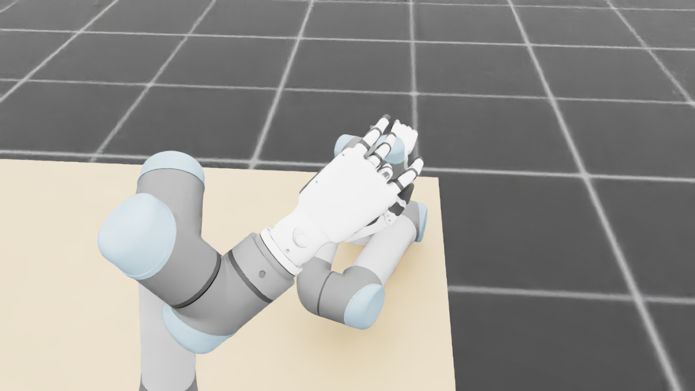
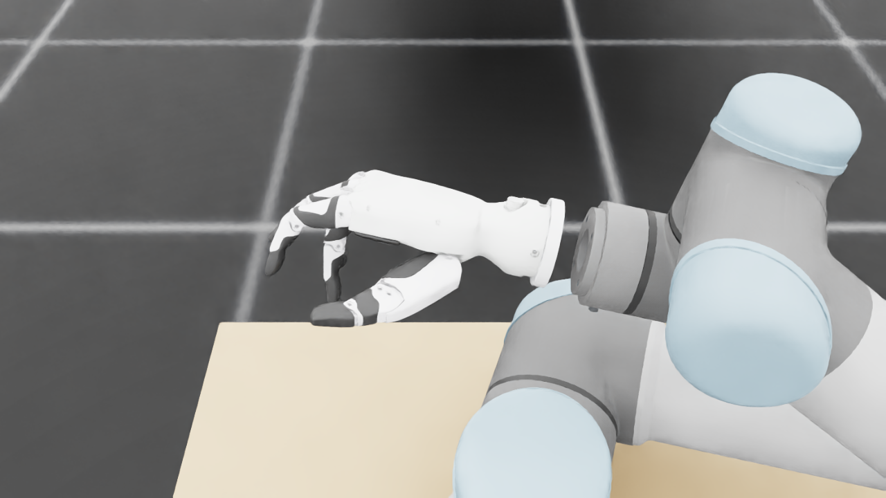
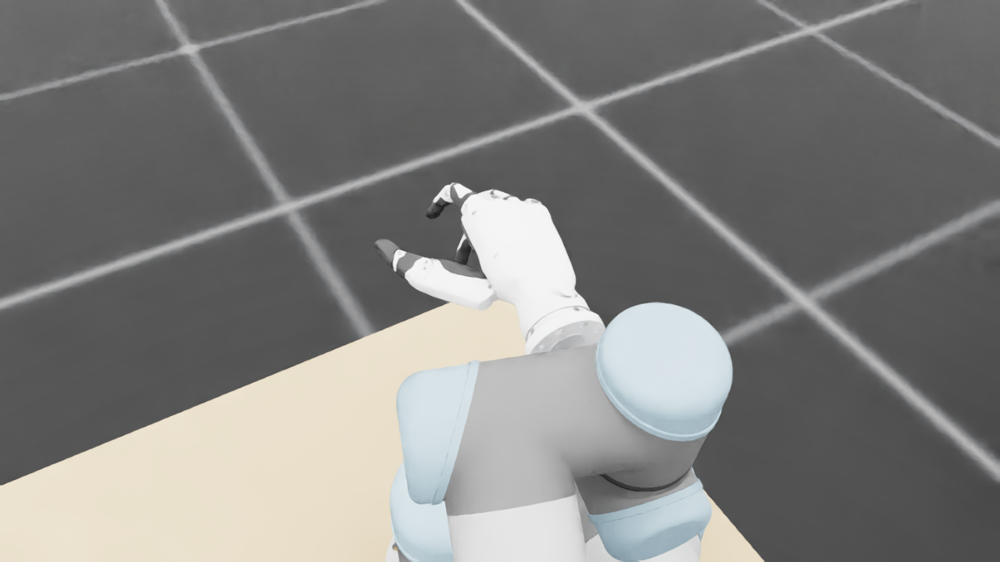
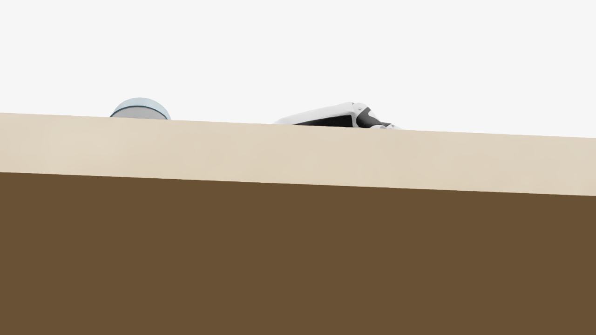
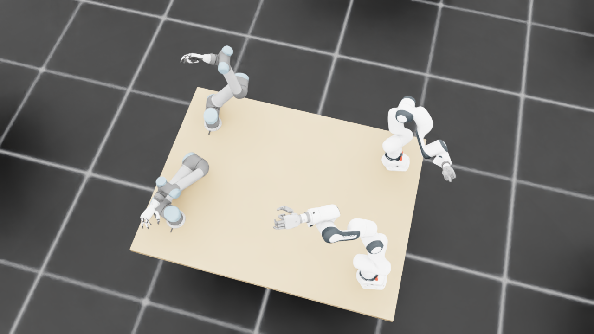
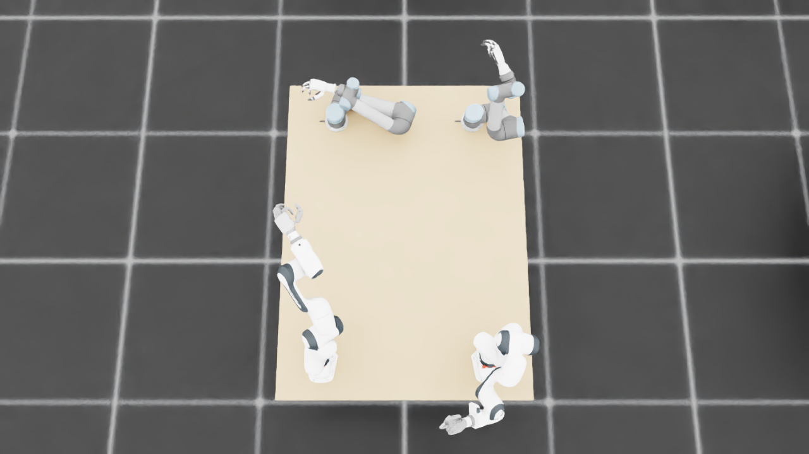
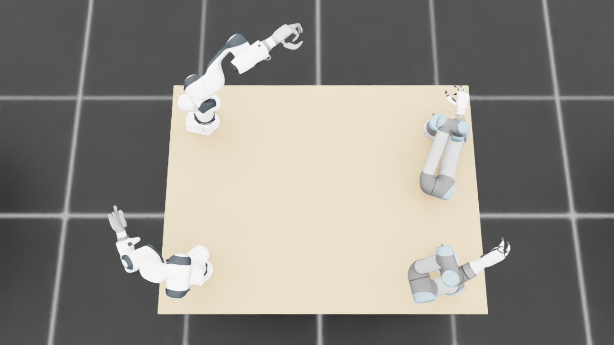
{
"qualified": true,
"arms": {
"F_L": {
"qualified": true,
"palm_visual_peak_pixels": 29750,
"finger_family_peak_pixels": {
"thumb": 9124,
"index": 4705,
"middle": 4212,
"ring": 2689,
"little": 2560
},
"per_native_body_peak_pixels": {
"/World/envs/env_20/F_L/f2_hand/left_hand_base": 36142,
"/World/envs/env_20/F_L/f2_hand/left_index_1": 2843,
"/World/envs/env_20/F_L/f2_hand/left_middle_1": 2439,
"/World/envs/env_20/F_L/f2_hand/left_pinky_1": 1972,
"/World/envs/env_20/F_L/f2_hand/left_ring_1": 2267,
"/World/envs/env_20/F_L/f2_hand/left_thumb_1": 811,
"/World/envs/env_20/F_L/f2_hand/left_index_2": 1990,
"/World/envs/env_20/F_L/f2_hand/left_middle_2": 1935,
"/World/envs/env_20/F_L/f2_hand/left_pinky_2": 588,
"/World/envs/env_20/F_L/f2_hand/left_ring_2": 933,
"/World/envs/env_20/F_L/f2_hand/left_thumb_2": 4991,
"/World/envs/env_20/F_L/f2_hand/left_thumb_3": 2044,
"/World/envs/env_20/F_L/f2_hand/left_thumb_4": 1648
},
"native_body_visibility_gaps": [],
"all_native_hand_bodies_observed": true,
"full_mesh_coverage_certified": false,
"all_recorded_attempt_peak": {
"qualified": true,
"palm_visual_peak_pixels": 29750,
"finger_family_peak_pixels": {
"thumb": 9124,
"index": 4705,
"middle": 4212,
"ring": 2689,
"little": 2560
},
"per_native_body_peak_pixels": {
"/World/envs/env_20/F_L/f2_hand/left_hand_base": 36142,
"/World/envs/env_20/F_L/f2_hand/left_index_1": 2843,
"/World/envs/env_20/F_L/f2_hand/left_middle_1": 2439,
"/World/envs/env_20/F_L/f2_hand/left_pinky_1": 1972,
"/World/envs/env_20/F_L/f2_hand/left_ring_1": 2267,
"/World/envs/env_20/F_L/f2_hand/left_thumb_1": 811,
"/World/envs/env_20/F_L/f2_hand/left_index_2": 1990,
"/World/envs/env_20/F_L/f2_hand/left_middle_2": 1935,
"/World/envs/env_20/F_L/f2_hand/left_pinky_2": 588,
"/World/envs/env_20/F_L/f2_hand/left_ring_2": 933,
"/World/envs/env_20/F_L/f2_hand/left_thumb_2": 4991,
"/World/envs/env_20/F_L/f2_hand/left_thumb_3": 2044,
"/World/envs/env_20/F_L/f2_hand/left_thumb_4": 1648
},
"native_body_visibility_gaps": [],
"all_native_hand_bodies_observed": true,
"full_mesh_coverage_certified": false,
"qualification": false
},
"attempts": 3,
"decoded": 3
},
"F_R": {
"qualified": true,
"palm_visual_peak_pixels": 18945,
"finger_family_peak_pixels": {
"thumb": 8846,
"index": 6211,
"middle": 6146,
"ring": 3944,
"little": 6404
},
"per_native_body_peak_pixels": {
"/World/envs/env_20/F_R/f2_hand/right_hand_base": 26831,
"/World/envs/env_20/F_R/f2_hand/right_index_1": 2820,
"/World/envs/env_20/F_R/f2_hand/right_middle_1": 2282,
"/World/envs/env_20/F_R/f2_hand/right_pinky_1": 3904,
"/World/envs/env_20/F_R/f2_hand/right_ring_1": 1939,
"/World/envs/env_20/F_R/f2_hand/right_thumb_1": 636,
"/World/envs/env_20/F_R/f2_hand/right_index_2": 3391,
"/World/envs/env_20/F_R/f2_hand/right_middle_2": 4021,
"/World/envs/env_20/F_R/f2_hand/right_pinky_2": 3123,
"/World/envs/env_20/F_R/f2_hand/right_ring_2": 3043,
"/World/envs/env_20/F_R/f2_hand/right_thumb_2": 5051,
"/World/envs/env_20/F_R/f2_hand/right_thumb_3": 1782,
"/World/envs/env_20/F_R/f2_hand/right_thumb_4": 2115
},
"native_body_visibility_gaps": [],
"all_native_hand_bodies_observed": true,
"full_mesh_coverage_certified": false,
"all_recorded_attempt_peak": {
"qualified": false,
"palm_visual_peak_pixels": 23320,
"finger_family_peak_pixels": {
"thumb": 9611,
"index": 6211,
"middle": 6146,
"ring": 3944,
"little": 6404
},
"per_native_body_peak_pixels": {
"/World/envs/env_20/F_R/f2_hand/right_hand_base": 30176,
"/World/envs/env_20/F_R/f2_hand/right_index_1": 3315,
"/World/envs/env_20/F_R/f2_hand/right_middle_1": 2282,
"/World/envs/env_20/F_R/f2_hand/right_pinky_1": 3904,
"/World/envs/env_20/F_R/f2_hand/right_ring_1": 1939,
"/World/envs/env_20/F_R/f2_hand/right_thumb_1": 1047,
"/World/envs/env_20/F_R/f2_hand/right_index_2": 3391,
"/World/envs/env_20/F_R/f2_hand/right_middle_2": 4021,
"/World/envs/env_20/F_R/f2_hand/right_pinky_2": 3123,
"/World/envs/env_20/F_R/f2_hand/right_ring_2": 3043,
"/World/envs/env_20/F_R/f2_hand/right_thumb_2": 5678,
"/World/envs/env_20/F_R/f2_hand/right_thumb_3": 2058,
"/World/envs/env_20/F_R/f2_hand/right_thumb_4": 2115
},
"native_body_visibility_gaps": [],
"all_native_hand_bodies_observed": true,
"full_mesh_coverage_certified": false,
"qualification": false
},
"attempts": 9,
"decoded": 9
},
"U_L": {
"qualified": true,
"palm_visual_peak_pixels": 11412,
"finger_family_peak_pixels": {
"thumb": 9105,
"index": 3862,
"middle": 2376,
"ring": 2399,
"little": 2492
},
"per_native_body_peak_pixels": {
"/World/envs/env_20/U_L/wrist_3_link": 35881,
"/World/envs/env_20/U_L/left_index_1": 2467,
"/World/envs/env_20/U_L/left_little_1": 1358,
"/World/envs/env_20/U_L/left_middle_1": 696,
"/World/envs/env_20/U_L/left_ring_1": 1264,
"/World/envs/env_20/U_L/left_thumb_1": 195,
"/World/envs/env_20/U_L/left_index_2": 1395,
"/World/envs/env_20/U_L/left_little_2": 1134,
"/World/envs/env_20/U_L/left_middle_2": 1854,
"/World/envs/env_20/U_L/left_ring_2": 1172,
"/World/envs/env_20/U_L/left_thumb_2": 5439,
"/World/envs/env_20/U_L/left_thumb_3": 2499,
"/World/envs/env_20/U_L/left_thumb_4": 1114
},
"native_body_visibility_gaps": [],
"all_native_hand_bodies_observed": true,
"full_mesh_coverage_certified": false,
"all_recorded_attempt_peak": {
"qualified": false,
"palm_visual_peak_pixels": 12889,
"finger_family_peak_pixels": {
"thumb": 9105,
"index": 3862,
"middle": 3202,
"ring": 3001,
"little": 3001
},
"per_native_body_peak_pixels": {
"/World/envs/env_20/U_L/wrist_3_link": 47370,
"/World/envs/env_20/U_L/left_index_1": 2467,
"/World/envs/env_20/U_L/left_little_1": 1903,
"/World/envs/env_20/U_L/left_middle_1": 1151,
"/World/envs/env_20/U_L/left_ring_1": 1713,
"/World/envs/env_20/U_L/left_thumb_1": 374,
"/World/envs/env_20/U_L/left_index_2": 1395,
"/World/envs/env_20/U_L/left_little_2": 1333,
"/World/envs/env_20/U_L/left_middle_2": 2051,
"/World/envs/env_20/U_L/left_ring_2": 1440,
"/World/envs/env_20/U_L/left_thumb_2": 5439,
"/World/envs/env_20/U_L/left_thumb_3": 2499,
"/World/envs/env_20/U_L/left_thumb_4": 1155
},
"native_body_visibility_gaps": [],
"all_native_hand_bodies_observed": true,
"full_mesh_coverage_certified": false,
"qualification": false
},
"attempts": 5,
"decoded": 5
},
"U_R": {
"qualified": true,
"palm_visual_peak_pixels": 2064,
"finger_family_peak_pixels": {
"thumb": 12361,
"index": 5338,
"middle": 3064,
"ring": 1216,
"little": 2446
},
"per_native_body_peak_pixels": {
"/World/envs/env_20/U_R/wrist_3_link": 44733,
"/World/envs/env_20/U_R/right_index_1": 3278,
"/World/envs/env_20/U_R/right_little_1": 2434,
"/World/envs/env_20/U_R/right_middle_1": 1141,
"/World/envs/env_20/U_R/right_ring_1": 877,
"/World/envs/env_20/U_R/right_thumb_1": 89,
"/World/envs/env_20/U_R/right_index_2": 2060,
"/World/envs/env_20/U_R/right_little_2": 138,
"/World/envs/env_20/U_R/right_middle_2": 1923,
"/World/envs/env_20/U_R/right_ring_2": 339,
"/World/envs/env_20/U_R/right_thumb_2": 7006,
"/World/envs/env_20/U_R/right_thumb_3": 3263,
"/World/envs/env_20/U_R/right_thumb_4": 2029
},
"native_body_visibility_gaps": [],
"all_native_hand_bodies_observed": true,
"full_mesh_coverage_certified": false,
"all_recorded_attempt_peak": {
"qualified": false,
"palm_visual_peak_pixels": 2064,
"finger_family_peak_pixels": {
"thumb": 12361,
"index": 5338,
"middle": 3064,
"ring": 3277,
"little": 2446
},
"per_native_body_peak_pixels": {
"/World/envs/env_20/U_R/wrist_3_link": 49560,
"/World/envs/env_20/U_R/right_index_1": 3278,
"/World/envs/env_20/U_R/right_little_1": 2434,
"/World/envs/env_20/U_R/right_middle_1": 1416,
"/World/envs/env_20/U_R/right_ring_1": 1805,
"/World/envs/env_20/U_R/right_thumb_1": 89,
"/World/envs/env_20/U_R/right_index_2": 2060,
"/World/envs/env_20/U_R/right_little_2": 563,
"/World/envs/env_20/U_R/right_middle_2": 1923,
"/World/envs/env_20/U_R/right_ring_2": 1479,
"/World/envs/env_20/U_R/right_thumb_2": 7006,
"/World/envs/env_20/U_R/right_thumb_3": 3263,
"/World/envs/env_20/U_R/right_thumb_4": 2029
},
"native_body_visibility_gaps": [],
"all_native_hand_bodies_observed": true,
"full_mesh_coverage_certified": false,
"qualification": false
},
"attempts": 10,
"decoded": 10
}
},
"wide": {
"qualified": true,
"per_native_object_peak_pixels": {
"/World/envs/env_20/F_L/fr3_link0": 2209,
"/World/envs/env_20/F_L/fr3_link1": 1685,
"/World/envs/env_20/F_L/fr3_link2": 1732,
"/World/envs/env_20/F_L/fr3_link3": 1928,
"/World/envs/env_20/F_L/fr3_link4": 2430,
"/World/envs/env_20/F_L/fr3_link5": 4472,
"/World/envs/env_20/F_L/fr3_link6": 2147,
"/World/envs/env_20/F_L/fr3_link7": 984,
"/World/envs/env_20/F_L/fr3_link8": 201,
"/World/envs/env_20/F_L/f2_hand/left_hand_base": 1357,
"/World/envs/env_20/F_L/f2_hand/left_index_1": 146,
"/World/envs/env_20/F_L/f2_hand/left_middle_1": 109,
"/World/envs/env_20/F_L/f2_hand/left_pinky_1": 100,
"/World/envs/env_20/F_L/f2_hand/left_ring_1": 106,
"/World/envs/env_20/F_L/f2_hand/left_thumb_1": 40,
"/World/envs/env_20/F_L/f2_hand/left_index_2": 101,
"/World/envs/env_20/F_L/f2_hand/left_middle_2": 104,
"/World/envs/env_20/F_L/f2_hand/left_pinky_2": 54,
"/World/envs/env_20/F_L/f2_hand/left_ring_2": 49,
"/World/envs/env_20/F_L/f2_hand/left_thumb_2": 243,
"/World/envs/env_20/F_L/f2_hand/left_thumb_3": 98,
"/World/envs/env_20/F_L/f2_hand/left_thumb_4": 77,
"/World/envs/env_20/F_R/fr3_link0": 1783,
"/World/envs/env_20/F_R/fr3_link1": 1613,
"/World/envs/env_20/F_R/fr3_link2": 1349,
"/World/envs/env_20/F_R/fr3_link3": 3100,
"/World/envs/env_20/F_R/fr3_link4": 4362,
"/World/envs/env_20/F_R/fr3_link5": 2019,
"/World/envs/env_20/F_R/fr3_link6": 1602,
"/World/envs/env_20/F_R/fr3_link7": 941,
"/World/envs/env_20/F_R/fr3_link8": 179,
"/World/envs/env_20/F_R/f2_hand/right_hand_base": 978,
"/World/envs/env_20/F_R/f2_hand/right_index_1": 40,
"/World/envs/env_20/F_R/f2_hand/right_middle_1": 68,
"/World/envs/env_20/F_R/f2_hand/right_pinky_1": 46,
"/World/envs/env_20/F_R/f2_hand/right_ring_1": 47,
"/World/envs/env_20/F_R/f2_hand/right_thumb_1": 0,
"/World/envs/env_20/F_R/f2_hand/right_index_2": 46,
"/World/envs/env_20/F_R/f2_hand/right_middle_2": 60,
"/World/envs/env_20/F_R/f2_hand/right_pinky_2": 61,
"/World/envs/env_20/F_R/f2_hand/right_ring_2": 100,
"/World/envs/env_20/F_R/f2_hand/right_thumb_2": 143,
"/World/envs/env_20/F_R/f2_hand/right_thumb_3": 70,
"/World/envs/env_20/F_R/f2_hand/right_thumb_4": 70,
"/World/envs/env_20/U_L/base_link": 362,
"/World/envs/env_20/U_L/shoulder_link": 1301,
"/World/envs/env_20/U_L/upper_arm_link": 3996,
"/World/envs/env_20/U_L/forearm_link": 3949,
"/World/envs/env_20/U_L/wrist_1_link": 1495,
"/World/envs/env_20/U_L/wrist_2_link": 379,
"/World/envs/env_20/U_L/wrist_3_link": 2243,
"/World/envs/env_20/U_L/left_index_1": 123,
"/World/envs/env_20/U_L/left_little_1": 171,
"/World/envs/env_20/U_L/left_middle_1": 48,
"/World/envs/env_20/U_L/left_ring_1": 81,
"/World/envs/env_20/U_L/left_thumb_1": 6,
"/World/envs/env_20/U_L/left_index_2": 101,
"/World/envs/env_20/U_L/left_little_2": 91,
"/World/envs/env_20/U_L/left_middle_2": 68,
"/World/envs/env_20/U_L/left_ring_2": 32,
"/World/envs/env_20/U_L/left_thumb_2": 99,
"/World/envs/env_20/U_L/left_thumb_3": 23,
"/World/envs/env_20/U_L/left_thumb_4": 29,
"/World/envs/env_20/U_R/base_link": 424,
"/World/envs/env_20/U_R/shoulder_link": 1497,
"/World/envs/env_20/U_R/upper_arm_link": 4838,
"/World/envs/env_20/U_R/forearm_link": 4807,
"/World/envs/env_20/U_R/wrist_1_link": 858,
"/World/envs/env_20/U_R/wrist_2_link": 354,
"/World/envs/env_20/U_R/wrist_3_link": 1305,
"/World/envs/env_20/U_R/right_index_1": 71,
"/World/envs/env_20/U_R/right_little_1": 27,
"/World/envs/env_20/U_R/right_middle_1": 26,
"/World/envs/env_20/U_R/right_ring_1": 60,
"/World/envs/env_20/U_R/right_thumb_1": 3,
"/World/envs/env_20/U_R/right_index_2": 46,
"/World/envs/env_20/U_R/right_little_2": 12,
"/World/envs/env_20/U_R/right_middle_2": 37,
"/World/envs/env_20/U_R/right_ring_2": 47,
"/World/envs/env_20/U_R/right_thumb_2": 193,
"/World/envs/env_20/U_R/right_thumb_3": 74,
"/World/envs/env_20/U_R/right_thumb_4": 36,
"/World/envs/env_20/TableF": 140187,
"/World/envs/env_20/TableU": 130154
},
"arm_peak_pixels": {
"F_L": 17776,
"F_R": 15539,
"U_L": 13062,
"U_R": 13908
},
"table_peak_pixels": {
"TableF": 140187,
"TableU": 130154
},
"critical_body_peak_pixels": {
"/World/envs/env_20/U_L/forearm_link": 3949,
"/World/envs/env_20/U_L/wrist_2_link": 379,
"/World/envs/env_20/U_R/forearm_link": 4807,
"/World/envs/env_20/U_R/wrist_2_link": 354
}
},
"raw_attempt_count": 38,
"PNG_count": 38,
"angle_records": 38,
"max_actual_angle_identity_error_deg": 0.0,
"held_snapshot_checks": 1522,
"universal_visibility_impossible": false,
"full_mesh_coverage_certified": false
}